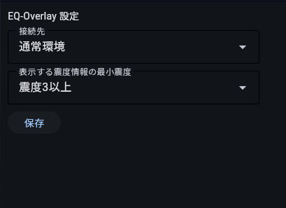

使い方
真面目に解説してあげます
前提条件 WIndowsであり、exeファイルを実行できること、及びインターネットに接続できること
MacOS? Linux? Windows買おう！
適当なフォルダを作成する(任意・推奨)
適当な名前でフォルダを作成して、その中にmain.exeを入れます。フォルダの場所や名前は間違って消さない場所がおすすめです。
起動する
ダブルクリックで普通に起動
初回起動時、SmartScreen(青いウィンドウ)が表示される場合があります
その場合は詳細情報をクリックし、表示された実行をクリックしてください。
Tips: exeファイルのショートカットをWindowsのスタートアップに登録しておくとなにかと便利です。
やりかたはしらべてね
地震情報の遅延や配信停止が発生する場合があります。実際の防災行動は公的機関の発表に従ってください。
設定を変更する
4-1. GUIを使った設定変更方法
- タスクトレイにあるEQ-overlayを右クリックします。
- メニューから「設定」をクリックすると、ブラウザで設定メニューが開きます。
- 設定を変更して「保存」をクリックします。
- ソフトウェアを再起動します。
4-2. config.jsonを直接書き換える方法(jsonの知識が必要)
config.jsonを編集すると、ソフトウェアの設定を変更することができます。
{
"connect_mode": "normal",
"min_sindo": "30"
}
"connect_mode" 受信するデータの選択的なの
normal：リアルタイムの地震情報を受信します。sandbox：テストモードです。過去の地震情報を30秒に1回受信します。
"min_sindo" 地名ごとの震度を表示する最小震度
設定値と震度の対応は次の通りです。例の "30" は震度3に対応します。
| 設定値 | 震度 |
|---|---|
10 | 震度1 |
20 | 震度2 |
30 | 震度3 |
40 | 震度4 |
45 | 震度5弱 |
50 | 震度5強 |
55 | 震度6弱 |
60 | 震度6強 |
70 | 震度7 |
- 設定項目名や値は、配布ファイルに含まれる設定例に合わせてください。
- JSONの書式を保ち、項目名と文字列の値はダブルクォーテーションで囲みます。
- config.jsonは削除すると起動時に自動生成されるので、動かなくなったら消してみるといけるかも
なんか使えないとき
- インターネットに接続できることを確認してください。
- 本ソフトウェアを複数起動している場合は、1つだけにしてください。
- P2P地震情報APIを利用する他のアプリが起動中の場合は、いったん終了して再度お試しください。
- config.jsonを編集した場合は、JSONの括弧・カンマ・引用符を確認し、配布時の設定例と見比べてください。
- エラーメッセージ( Handshake status 429 Too Many Requests(以下略))などが表示された場合はgoogleなどで検索してみてください。